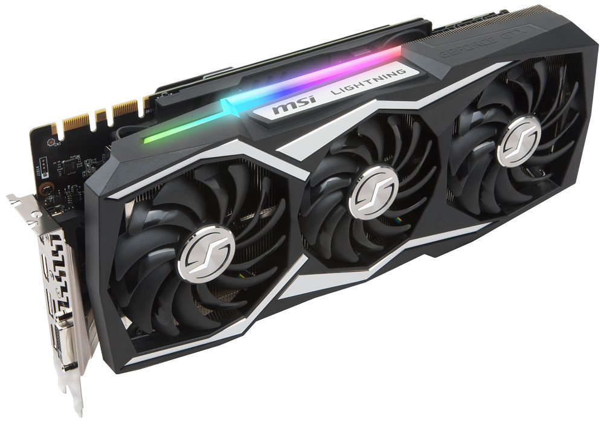

The case serves as a protective layer from dust
and other particles floating in the air. The
case also holds the fans.
The GPU or Graphics proccessing Unit is a
chip that is specialzed for visual functions
if possible the GPU will render all the images
and animations that appear on the monitor
Anything That is not inside or part of
the case is considered a peripheral. This includes
monitors,keyboards, mice,microphones, speakers, and many
others